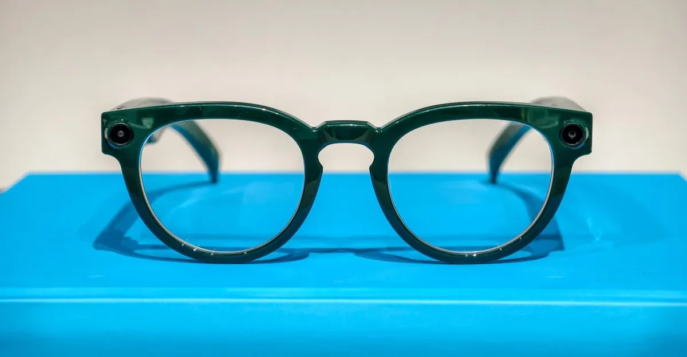
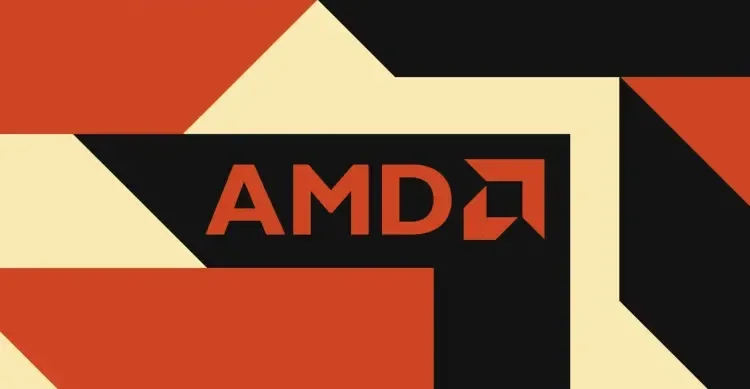
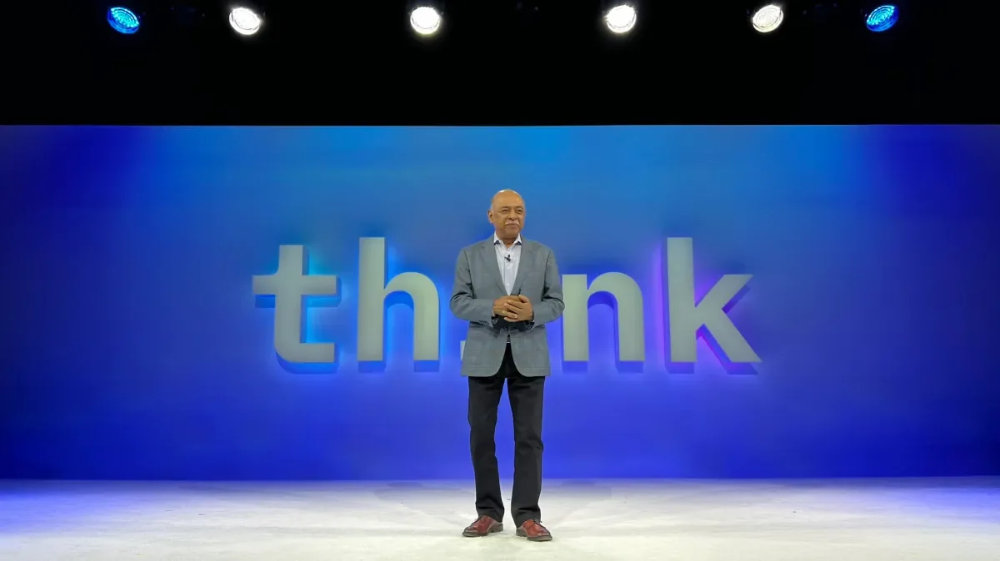

01
Yope融资1200万美元，要做没有算法和广告的私密社交
这家初创公司想用“微社区”模式挑战Facebook、TikTok和Instagram。

想象一下，你打开一个社交应用，没有信息流算法推荐、没有广告、没有公开内容，只有你加入的几个小群组——家人群、密友群、读书小组。这就是Yope正在构建的社交网络。近期，这家公司宣布获得由Northzone领投的相关数量万美元融资。Yope的核心是“微社区”——用户创建或加入最多几十人的私密群组，在里面分享照片、视频和消息，未来还会加入游戏功能。与微信或WhatsApp的群聊不同，Yope强调每个群组有独立的“空间感”，而不是一个聊天列表。创始人认为，现在的社交平台已经从“连接朋友”变成了“大型娱乐平台”，用户真正需要的是小范围的、有信任感的互动。从技术角度看，Yope的挑战在于如何在不依赖算法的情况下保持用户活跃度——因为没有推荐系统，用户必须主动邀请朋友加入。商业模式上，Yope计划通过订阅制收费，而不是广告。对于普通人来说，如果你厌倦了被算法操控的信息流，Yope提供了一种回归“社交本质”的选择。但问题是，它能否在巨头环伺下获得足够多的用户？
伊恩的观察
Yope代表了一种反算法、反广告的社交新方向，但私密社交的规模天花板和用户获取成本是其最大挑战。
02
Menlo Ventures合伙人：AI创始人必须改变打法
Matt Murphy在播客中分享了AI初创公司成功的三个关键要素。
近期，知名风投Menlo Ventures的合伙人Matt Murphy在TechCrunch播客中谈到，AI初创公司的创始人需要以不同于传统软件创业的方式思考。他提出三点：第一，不要只关注模型能力，而要关注“差异化数据”——谁拥有独特、高质量的数据集，谁就能建立护城河。第二，AI产品的用户体验必须“魔法般简单”——用户不需要理解底层技术，只需要得到结果。第三，商业模式要尽早考虑“按结果付费”而非按订阅收费，因为企业客户更愿意为实际价值买单。Murphy还警告，AI领域的泡沫正在形成，许多公司估值过高但缺乏实际收入。他建议创始人专注于解决一个具体问题，而不是试图做“AI平台”。对于AI创业者，这些建议直指核心：技术本身不是壁垒，数据和分发才是。对于普通人，这解释了为什么有些AI产品迅速走红而另一些默默无闻——关键在于是否解决了真实需求。
伊恩的观察
AI创业已进入深水区，创始人需要从模型竞赛转向数据、体验和商业模式创新。
03
三星智能眼镜真机曝光，与谷歌合作搭载Android XR
这款眼镜看起来像普通眼镜，但内置了摄像头、扬声器和AI助手。

7月22日，The Verge发布了三星智能眼镜的实拍图片。这款眼镜由三星与谷歌联合开发，运行Android XR系统。从外观上看，它和Gentle Monster或Warby Parker的时尚眼镜几乎一样，但镜腿中集成了摄像头、扬声器和麦克风。用户可以通过语音或触摸与AI助手交互，实现导航、信息查询、拍照等功能。与之前的Google Glass不同，这款眼镜没有显示屏幕，而是通过音频和投影提示来提供信息。谷歌的Gemini AI模型嵌入其中，可以识别物体、翻译文字、提供上下文建议。三星的定价策略是关键——如果它定价在300美元左右，可能会像智能手表一样成为大众消费品。对于普通人，智能眼镜终于从“极客玩具”变成了“日常配件”。但隐私问题依然存在：摄像头随时可能拍摄，周围的人会感到不安。三星和谷歌需要解决“如何让眼镜看起来不像是偷拍工具”这个难题。
伊恩的观察
三星智能眼镜是AR消费化的最新尝试，外观时尚、功能实用，但隐私和价格是决定成败的关键。
04
AMD承诺向Anthropic投资50亿美元，部署2吉瓦AI芯片
这是AMD迄今为止最大的一笔AI基础设施投资，直接挑战英伟达的统治地位。

7月22日，AMD宣布将向AI公司Anthropic投入高达50亿美元，用于部署总计2吉瓦（GW）的AI计算基础设施。这笔交易的核心是AMD的Instinct MI450 GPU——这是AMD对标英伟达H100/B200的旗舰产品。Anthropic计划利用这些芯片训练和运行其下一代AI模型。2吉瓦是什么概念？一个典型的数据中心功率在几十兆瓦级别，2吉瓦相当于数十个大型数据中心的合计电力消耗。这意味着AMD和Anthropic正在构建全球最大的AI计算集群之一。此前，Anthropic主要依赖英伟达的GPU和谷歌的TPU，这次转向AMD是一个重要信号。对于AMD来说，这笔投资不仅是收入，更是生态建设——如果Anthropic的模型在AMD硬件上运行良好，其他AI公司可能会跟进。对于普通人，这笔交易短期内不会直接影响你的生活，但长期看，它可能打破英伟达在AI芯片市场的垄断，降低AI计算成本，最终让AI服务更便宜。
伊恩的观察
AMD通过巨额投资锁定大客户，试图在AI芯片市场撕开缺口，但技术成熟度和生态完善度仍是短板。
05
IBM财报不及预期，坚称AI没有杀死大型机
营收172亿美元、利润22亿美元，但华尔街仍不满意，股价下跌。

7月22日，IBM发布了2026年第二季度财报。数据显示，公司营收172亿美元，毛利润99亿美元，净利润22亿美元，毛利率接近58%。这些数字对于任何公司来说都算优秀，但华尔街预期更高，财报发布后股价下跌。问题出在哪里？IBM的传统业务——大型机（Mainframe）和IT服务——增长乏力，而AI相关业务的收入尚未能填补缺口。IBM在财报电话会上反复强调“AI没有杀死大型机”，并指出大型机仍然是金融、政府等关键行业的基石。但现实是，越来越多的企业将工作负载迁移到云端，使用基于x86或ARM架构的服务器，大型机的市场正在萎缩。IBM的应对策略是推出“AI优化的大型机”，将AI推理能力集成到硬件中。但分析师质疑，这种混合方案能否打动客户。对于普通人，IBM的困境反映了传统IT巨头在云和AI时代的转型之痛。如果你在传统IT行业工作，可能需要关注技能更新；如果你是企业IT决策者，则需要评估是否继续依赖大型机。
伊恩的观察
IBM财务基本面依然健康，但增长引擎缺失，AI转型尚未见效，大型机业务面临长期衰退。
无障碍文字记录
伊恩 你好，欢迎收听「伊恩每日·科技」，我是伊恩。今天是2026年7月23日。今天的节目，我们先从一个有意思的创业故事讲起：一家叫Yope的初创公司，拿到了1230万美元融资，要做“没有算法、没有广告、没有公开内容”的社交网络。在Facebook、TikTok、Snapchat这些巨型娱乐平台统治的今天，Yope凭什么觉得自己能活下来？
伊恩 今天聊一个反潮流的产品：Yope。这家公司刚拿到1230万美元融资，由欧洲老牌风投Northzone领投。Yope要做的事情听起来有点复古——一个没有算法、没有广告、没有公开内容的社交网络。
Yope的核心概念叫“微社区”，也就是小群组，成员是朋友和家人，在里面私密地分享照片、视频、消息，未来还会加入游戏。没有算法推荐，没有信息流广告，所有内容都不公开。这听起来像回到了2010年前后的社交网络——那时候你在Facebook上发照片，真的只有朋友能看到。
但从商业角度看，Yope的做法很冒险：不卖广告，不靠用户数据赚钱，那它怎么盈利？目前Yope没有透露具体模式，但投资者Northzone愿意下注，说明他们看好“私有连接”这个方向。
变化在于：社交网络正在从“广场”回归“客厅”。过去十年，Facebook、Instagram、TikTok把社交变成了大众娱乐平台，算法决定你看什么，广告商决定平台怎么赚钱。但用户开始疲劳了——隐私泄露、信息过载、时间被偷走。Yope赌的是，有一部分人愿意为“干净”的社交体验付费，或者至少接受另一种商业模式，比如订阅或增值服务。
技术门槛不高——群组聊天、端到端加密、照片共享，这些技术早已成熟。真正的成本门槛在用户获取：在巨头环伺下，让用户下载一个新App并拉进群组，很难。Yope需要靠口碑和信任慢慢渗透，而不是烧钱买量。
产业赢家可能是那些能真正建立信任的小众平台——如果Yope成功，会证明社交网络可以不用算法和广告也能活。输家则是过度依赖广告和算法的巨头——如果用户真的开始厌倦信息流，他们的商业模式就会动摇。不过，目前巨头的基本盘依然稳固，Yope的威胁还很小。
对普通人来说，Yope给你多一个选择：如果你不想被算法推着走，可以试试这种私密空间。但前提是，你的朋友也得愿意用。社交网络的核心从来不是技术，而是人。
听众 伊恩，Yope听起来很像早期的Path或者更近的Clubhouse，它们都失败了，Yope凭什么能成？
伊恩 好问题。Path和Clubhouse的问题不在模式，而在于没有形成真正的网络效应。Yope的不同在于它从“小群组”切入，不要求你关注大V，而是直接拉你的朋友进来。这有点像微信的群聊，但微信的群聊功能只是冰山一角。Yope如果能把私密分享做到极致，让用户觉得“在这里发东西比在朋友圈安全”，就可能有生存空间。当然，它还需要解决用户留存和变现问题，现在下结论还早。
伊恩 今天有一条消息，直接关系到AI算力格局的走向。AMD宣布，承诺向AI公司Anthropic投入高达50亿美元，部署2吉瓦的Instinct MI450 GPU算力。50亿美元是什么概念？相当于AMD去年全年研发预算的两倍多。Anthropic是OpenAI的主要竞争对手，旗下模型Claude以安全性和推理能力著称。这笔交易意味着什么？
先看变化：AMD正在从英伟达的追赶者，变成AI基础设施的关键供应商。过去，无论是OpenAI还是Anthropic，训练和推理几乎只用英伟达的GPU。现在，AMD通过巨额投资，把Anthropic绑上了自己的战车。这不是简单的采购合同，而是一种深度绑定——AMD承诺提供2吉瓦的算力，相当于一个中型数据中心的规模，全部采用自家MI450芯片。
技术门槛在哪里？MI450是AMD最新一代AI加速器，制程和架构都不输英伟达的H100，但软件生态是短板。AMD的ROCm软件栈虽然进步很快，但开发者习惯和工具链成熟度仍落后于CUDA。Anthropic选择AMD，意味着它愿意承担迁移成本，帮助AMD完善生态。这对AMD来说，是比卖芯片更宝贵的资产。
成本门槛极高。50亿美元不是谁都能拿出来的。AMD今年一季度营收才58亿美元，这笔承诺相当于把未来几年的利润都押了上去。但反过来看，如果成功，AMD将获得一个标杆客户，撬动更多AI公司转向。
赢家与输家：赢家是AMD和Anthropic。AMD获得大客户背书，Anthropic获得稳定算力供给，可以摆脱对英伟达的依赖。输家可能是英伟达——如果AMD借此撬动更多客户，英伟达的垄断地位会松动。但短期内，英伟达的生态护城河依然很深。
对普通人来说，这笔交易会间接影响你用的AI产品。如果Claude因此更快迭代、成本更低，你可能会在更多场景用到它——比如写作助手、代码生成、甚至客服。算力竞争越激烈，AI服务的价格就越可能下降。
我的判断：这是AI基础设施走向多元化的标志性事件。AMD用真金白银换生态入场券，Anthropic用技术选型换战略自主权。未来两年，AI芯片市场将从英伟达一家独大，变成两强甚至多强格局。对用户来说，这是好事。
伊恩 三星的智能眼镜终于露出真容了。The Verge拿到了一组图片，看起来和Gentle Monster的时尚墨镜很像，镜腿偏粗，应该集成了芯片、电池和扬声器。这款眼镜是和Google合作开发的，搭载Android XR系统。对比一下：之前Google Glass像个科幻道具，苹果Vision Pro像个头盔，三星这款至少看起来像一副正常的眼镜。技术门槛在于：要把AR显示、AI助手、长时间续航塞进普通眼镜的框架里，非常难。成本门槛也不低：估计售价不会低于1000美元。赢家可能是三星和Google——如果产品体验足够好，他们能抢占“轻量级AR”这个中间地带。输家可能是Meta的Ray-Ban Stories——如果三星做得更好，Meta的眼镜就尴尬了。对普通人来说，智能眼镜可能真正开始变得可穿戴，而不是可负担。
听众 智能眼镜喊了十年都没普及，这次三星+Google能成吗？
伊恩 我持谨慎乐观。过去失败的原因：一是外观太丑，二是功能鸡肋，三是续航太短。三星这次和Gentle Monster合作，外观至少过关了。功能上，Android XR加上Google的AI助手Gemini，应该能实现实时翻译、导航提示、消息通知等实用功能。续航是最大未知数——如果只能撑两小时，那和Vision Pro一样无法全天佩戴。关键看三星怎么平衡性能与功耗。如果这次能解决续航问题，智能眼镜的普及可能真正开始。
伊恩 想象一下，你刚收到一份财报：营收172亿美元，利润22亿美元，毛利率58%。数字不差，但华尔街不买账。IBM的股价在7月22日盘后暴跌，市值一天蒸发了约200亿美元。更让市场揪心的是，大型机业务收入同比下降了23%。IBM的CEO Arvind Krishna在电话会上反复强调：“AI不会杀死大型机。”但市场似乎并不相信。
大型机是什么？简单说，就是银行、航空、保险这些行业用来处理核心交易的老大哥。它稳定、可靠，但极其昂贵——一台大型机动辄数百万美元，维护需要专门的技能，编程语言还是COBOL这种上世纪的东西。IBM的逻辑是：大型机仍然在处理全球最核心的交易数据，AI可以辅助运维，比如预测故障、优化负载，所以大型机不会死。
但事实是，AI不仅没有拯救大型机，反而加速了客户向云端迁移。为什么？因为AI本身需要灵活、可扩展的计算资源，而大型机封闭、昂贵的架构恰恰是障碍。企业发现，与其花大价钱维护大型机，不如把工作负载搬到AWS或Azure上，用分布式系统跑AI模型，成本更低、迭代更快。
技术门槛在降低。以前大型机的运维和编程需要特殊技能，现在云原生技术、容器化、微服务让普通工程师也能上手。成本门槛更明显：大型机的TCO（总拥有成本）远高于云服务。赢家是AWS、Azure这些云服务商，输家是IBM的传统硬件业务。
对普通人来说，你用的银行交易、航空订票系统可能正在从大型机迁移到云端。这意味着更快的响应——比如转账秒到账，而不是等半天；也意味着更低的出错概率——云端的自动扩展和冗余设计比老旧的单点架构更可靠。但迁移过程也有风险：数据迁移、系统兼容性、安全漏洞，都是需要警惕的。
IBM的困境不是一天造成的。从2010年代开始，大型机业务就在缓慢下滑，只是这次AI浪潮加速了趋势。IBM试图用AI反哺大型机，但市场更看好云和AI的结合。我的判断是：大型机不会一夜消失，但它的黄金时代已经过去。IBM需要彻底转型，而不是守着旧业务说“AI不是敌人”。
伊恩 今天聊一个对AI创业者很关键的观点。Menlo Ventures的合伙人Matt Murphy，在最新一期播客里给AI初创公司提了三条建议。他说，现在的AI创业者必须做三件不同的事。
第一，不要只做模型，要做应用。基础模型已经够多了，真正的机会在垂直场景。第二，要建立数据飞轮——你的产品越用越好，而不是靠算力堆砌。第三，要关注商业模式——很多AI公司烧钱太快，却不知道如何盈利。
这些建议听起来不新鲜，但Murphy是硅谷顶级VC，投过Uber、Siri等公司，他的判断值得重视。
变化在于：AI投资正在从“投模型”转向“投应用”。过去两年，资本大量涌入大模型公司，但OpenAI、Anthropic、Google等巨头已经占据主导，初创公司很难再靠训练一个更好的模型胜出。现在，投资人更看重的是：你能不能把AI塞进一个具体的行业流程里，解决一个真实问题。
技术门槛上，应用层创新不需要自研大模型，但需要深刻理解行业。比如用AI做医疗影像分析，你得懂放射科医生的工作流；用AI做合同审查，你得懂法律条款的优先级。这种行业知识壁垒，反而是护城河。
成本门槛方面，开发应用相对低，但获客和留存更难。基础模型API已经便宜到几乎可以忽略，但要让企业客户买单，你需要销售团队、合规认证、售后支持——这些才是烧钱的大头。
产业赢家会是那些能解决实际问题的垂直AI公司，比如专攻客服、代码审查、药物发现的团队。输家则是那些只会套壳API的“伪AI”公司——它们没有数据飞轮，用户用一次和用一百次没区别，很容易被替代。
对普通人来说，这意味着未来你用的AI工具会更具体、更实用。不再是那种“什么都答一点但都不够准”的聊天机器人，而是能帮你写专业邮件、整理病历、优化供应链的专用助手。
Murphy的潜台词是：AI的泡沫正在退去，真正创造价值的公司才能活下来。
伊恩 好，我们来把今天的事件串一下。Yope的“无算法社交”和AMD的“算力绑定”看似无关，其实指向同一个趋势：用户和企业在逃离“大一统”的平台。Yope逃离的是Facebook的算法牢笼，AMD逃离的是英伟达的算力垄断。三星的智能眼镜和IBM的大型机，则代表了两种不同的“硬件叙事”：一个试图用轻量AR重新定义人机交互，一个在云计算浪潮中艰难转身。而AI创业者的新法则，本质上是在提醒：技术只有落地到具体场景，才有商业价值。今天的五件事，其实都在回答同一个问题：在技术红利见顶的2026年，什么样的创新才能真正活下去？答案或许很朴素：回到用户，回到成本，回到真实需求。
伊恩 以上就是今天的「伊恩每日·科技」。如果你有自己的观察或疑问，欢迎在评论区留言，我们明天见。